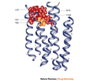

Effective vaccines have led, or might lead, to the eradication of important viral pathogens, such as smallpox, polio, measles, mumps and rubella. But other viral diseases, particularly human immunodeficiency virus (HIV) and hepatitis C virus (HCV), have so far proved to be intractable to the vaccine approach. The need for effective antiviral drugs is further emphasized by the lack of vaccines for most respiratory-tract virus infections (adenovirus, rhinovirus, parainfluenza virus and respiratory syncytial virus (RSV)), the widely occurring human papilloma viruses (HPV) and herpesviruses (herpes simplex virus types 1 and 2 (HSV-1, -2), varicella-zoster virus (VZV), Epstein–Barr virus (EBV), cytomegalovirus (CMV), human herpesviruses types 6, 7 and 8 (HHV-6, -7, -8)), and the vast array of haemorrhagic fever viruses. And although vaccines have been developed for hepatitis B virus (HBV) and influenza virus types A and B, their use has not eliminated the need for effective chemotherapeutic agents.
Many new antiviral drugs have been licensed in recent years (Table 1), most of which are used for the treatment of HIV infections; of the current repertoire of more than 30 drugs, 16 are anti-HIV, 5 are anti-CMV, 5 are anti-HSV and anti-VZV, 1 is anti-RSV, 3 are anti-hepatitis and 4 are anti-influenza1. But there is considerable room for improvement, as these compounds are not always efficacious or well tolerated. The emergence of viral resistance to drugs and drug-related side effects are among the main reasons for further refinement of antiviral drug design and development.

Antiviral drug design could, in principle, be targeted at either viral proteins or cellular proteins. The first approach is likely to yield more specific, less toxic compounds, with a narrow spectrum of antiviral activity and a higher likelihood of virus drug-resistance development, whereas the second approach might afford antiviral compounds with a broader activity spectrum and less chance of resistance development, but higher likelihood of toxicity. Both routes are worth exploring, the preferred route being dictated by both the nature of the virus and the targets that the virus or its host cell have to offer.
As exemplified for HIV (Fig. 1), the viral life cycle encompasses several crucial steps, starting with the attachment of the virus to the cell and finishing with the release of the progeny VIRIONS from the cell. The replicative cycle of retroviruses, such as HIV, becomes closely associated with the host cell; after reverse transcription (RNA DNA), the resulting proviral DNA becomes integrated into the cellular genome and then follows the 'classical' transcription and translation processes. By contrast, 'normal' cytolytic viruses, such as herpesviruses, replicate their genome and express their genes autonomously, independent of the host cell metabolism. Here, I focus primarily on approaches targeted at specific processes in viral infection (Fig. 1), including virus adsorption, virus–cell fusion, viral DNA or RNA synthesis (although host cellular components are also associated with these processes), and viral enzymes, such as protease and neuraminidase. Two host cellular enzymes — inosine 5'-monophosphate (IMP) dehydrogenase and S-adenosylhomocysteine (SAH) hydrolase — could also be targets for certain classes of antiviral agents.
DNA), the resulting proviral DNA becomes integrated into the cellular genome and then follows the 'classical' transcription and translation processes. By contrast, 'normal' cytolytic viruses, such as herpesviruses, replicate their genome and express their genes autonomously, independent of the host cell metabolism. Here, I focus primarily on approaches targeted at specific processes in viral infection (Fig. 1), including virus adsorption, virus–cell fusion, viral DNA or RNA synthesis (although host cellular components are also associated with these processes), and viral enzymes, such as protease and neuraminidase. Two host cellular enzymes — inosine 5'-monophosphate (IMP) dehydrogenase and S-adenosylhomocysteine (SAH) hydrolase — could also be targets for certain classes of antiviral agents.
Figure 1 | The viral life cycle, as exemplified by HIV.
Viral life cycles have several specific steps (see online animation), many of which are targets for antiviral drugs. After virus adsorption, enveloped viruses enter the cell by virus–cell fusion. For human immunodeficiency virus (HIV), which is a retrovirus with an RNA (yellow) genome, replication of the genome occurs after reverse transcription and integration into the host cell chromosome. For DNA viruses, such as herpesviruses, the genome is replicated by a viral DNA polymerase. After transcription to RNA, followed by translation and proteolytic processing of the precursor polypeptide, viral proteins assemble at the cell membrane, from which they bud to release new virions.
Virus adsorption inhibitors
Numerous polyanionic compounds (for example, polysulphates such as polyvinylalcohol sulphate, polysulphonates such as polyvinylsulphonate (Fig. 2), polycarboxylates, polynucleotides such as zintevir, polyoxometalates and negatively charged albumins) have been shown to inhibit HIV replication by preventing virus attachment (adsorption) to the surface of the host cell. All of these negatively charged polymers might be expected to interact with the positively charged amino acids in the V3 LOOP of the HIV glycoprotein, gp120, which is rich in arginine (R) and lysine (K) residues. In doing so, the polyanions shield the V3 loop and therefore hamper the binding of the HIV virions to heparan sulphate2, the primary binding site at the cell surface, before more specific binding occurs with the CD4 receptor on CD4+ cells.
Figure 2 | Basic (skeletal) pharmacophores or prototypic compounds of the classes of antiviral agents described in this review.
AZT, azidothymidine; IMP, inosine monophosphate; NNRTI, non-nucleoside reverse transcriptase inhibitor; NRTI, nucleoside reverse transcriptase inhibitor; PVAS, polyvinylalcohol sulphate; PVS, polyvinylsulphonate; SAH, S-adenosylhomocysteine.
Heparan sulphate is widely expressed on animal cells, and is involved in virus–cell binding for a broad array of ENVELOPED viruses, including HSV3 and dengue virus4. So, polysulphates, polysulphonates and other polyanionic substances that interfere with the binding of these enveloped viruses to target cells could be effective in both the treatment and prevention of such infections. Polyanionic substances could be important as vaginal microbicides as, in an appropriate formulation, they might prevent sexual transmission of HIV infection. Moreover, these polyanions are not only active against HIV, but also against HSV and other sexually transmitted disease (STD) pathogens, such as Neisseria gonorrhoeae and Chlamydia trachomatis5.
Although polyanions might have several sites of interaction, virus–cell attachment would be the preferred target from a therapeutic viewpoint, as it is the first opportunity to curtail the viral life cycle, and the polyanions do not need to enter the cells, which would be problematic. The interaction of polyanionic substances at this level can also be considered specific, as repeated passage of the HIV virus in the presence of polyanions can lead to resistance mediated by mutations in the envelope glycoprotein gp120, particularly in the V3 loop (K269E, Q278H, N293D), as originally shown for dextran sulphate6, and subsequently for zintevir7 and negatively charged albumins8.
Virus–cell fusion inhibitors
Enveloped viruses, as a rule, enter their host cells by fusion between the viral envelope and cellular plasma membrane (Fig. 1). This fusion process is basically similar for several enveloped virus families (that is, retro-, paramyxo- and herpesviruses), but for HIV it is preceded by the interaction of gp120 with its co-receptor on the host cell — the chemokine (C-X-C) motif receptor 4 (CXCR4) for T-tropic or X4 HIV strains, or the chemokine (C-C) motif receptor 5 (CCR5) for M-tropic or R5 HIV strains. CXCR4 and CCR5 normally act as the receptors for the C-X-C chemokine, SDF1 (stromal-cell-derived factor 1), and the C-C chemokines RANTES (regulated upon activation, normal T-cell expressed and secreted) and MIP1 (macrophage inflammatory protein 1), respectively. The coincidental use of both CXCR4 and CCR5 by HIV as co-receptors to enter cells has prompted the search for CXCR4 and CCR5 antagonists, which, through blockade of the corresponding co-receptor, might be able to block HIV entry into the cells.
This has now been shown with several compounds, the most prominent among the CXCR4 antagonists being the bicyclam AMD3100 (Refs 9,10 and Fig. 2), and the best documented among the CCR5 antagonists being TAK779 (Refs 11,12 and Fig. 2). The site of interaction of TAK779 with the transmembrane helices of CCR5 has been mapped12 (Fig. 3), and, likewise, crucial amino-acid residues involved in the binding of AMD3100 to CXCR4 have been identified13. Recently, a new CCR5 antagonist, SCH-C (SCH351125), was announced as an orally bioavailable inhibitor of M-tropic R5 strains that is capable of suppressing R5 HIV-1 infection both in vitro and in vivo (SCID-hu Thy/Liv mice)14. The clinical potential of the CXCR4 and CCR5 antagonists in the management of HIV infections remains to be proved. To ensure maximal coverage of both X4 and R5 strains, dual CXCR4/CCR5 antagonists should be developed, or single CCR5 and CXCR4 antagonists should be combined.
Figure 3 | Interaction of CCR5 with TAK779.
A structural model of CCR5 complexed with TAK779 (Fig. 2), viewed from within the plane of the membrane12. The indicated cluster of amino acids in the TAK779 binding site includes several aromatic residues (Y37, W86, Y108) that might form favourable interactions with the aromatic rings of TAK779. (Reprinted with permission from Ref. 12 © 2000, National Academy of Sciences, USA.)
The interaction of gp120 with its co-receptor (CCR5 or CXCR4) triggers a series of conformational changes in the gp120–gp41 complex that ultimately lead to the formation of a 'trimer-of-hairpins' structure in gp41 — a bundle of six  -helices: three -helices formed by the carboxy-terminal regions packed in an antiparallel manner with three -helices formed by the amino-terminal regions. The fusion-peptide region, located at the extreme amino terminus, will insert into the cellular membrane, whereas the carboxy-terminal region remains anchored in the viral envelope. In this sense, the trimer-of-hairpins motif brings the two membranes together, so agents that interfere with the formation of the gp41 trimer-of-hairpins structure might be expected to inhibit the fusion process15.
-helices: three -helices formed by the carboxy-terminal regions packed in an antiparallel manner with three -helices formed by the amino-terminal regions. The fusion-peptide region, located at the extreme amino terminus, will insert into the cellular membrane, whereas the carboxy-terminal region remains anchored in the viral envelope. In this sense, the trimer-of-hairpins motif brings the two membranes together, so agents that interfere with the formation of the gp41 trimer-of-hairpins structure might be expected to inhibit the fusion process15.
Several constructs have been designed to interfere with the gp41-mediated fusion process: the so-called '5-helix', which binds the carboxy-terminal region of gp41 (Ref. 15); d-peptide inhibitors, which dock into the pocket formed by the -helices of gp41 (Ref. 16); and T20 (pentafuside, previously called DP178, a synthetic 36-amino-acid peptide that corresponds to residues 127–162 of the ectodomain of gp41). T20 has proved effective in reducing plasma HIV levels in humans, providing the proof of concept that viral entry can be successfully blocked in vivo17.
Insight into the HIV fusion process should help in designing fusion inhibitors for other viruses as well, as trimer-of-hairpins motifs could also be predicted for other virus families15, including paramyxoviridae, such as parainfluenza virus, measles and respiratory syncytial virus. In fact, for each of these paramyxoviruses, peptides similar to T20 have been shown to block viral fusion18. Also, a cobalt-chelating complex (CTC96) that inhibits infection by HSV-1 through blocking fusion19 might have an extended antiviral activity spectrum, given the premise that enveloped viruses belonging to different families share an analogous process of membrane fusion.
Inhibitors of viral DNA or RNA synthesis
Viral DNA polymerase inhibitors. In contrast to retroviruses (Fig. 1), herpesviruses do not have a reverse transcription step in their replicative cycle, which means that their DNA genome can be replicated by the viral DNA polymerase after the latter has been expressed in the virus-infected cell. At present, all the antiviral agents that are available for the treatment of herpesvirus infections are nucleoside analogues: either acyclic guanosine analogues (that is, acyclovir, penciclovir, ganciclovir, and their oral PRODRUG forms valaciclovir, famciclovir and valganciclovir, respectively), or thymidine analogues (brivudin) (Fig. 2 and Table 1). All of these compounds target the viral DNA polymerase, but before they can interact with viral DNA synthesis, they need to be phosphorylated intracellularly to the triphosphate form. The first (and, for brivudin, also the second) phosphorylation step is ensured by the HSV- or VZV-encoded thymidine kinase, or the CMV-encoded protein kinase, and is therefore confined to virus-infected cells, which explains the specific antiviral action of the established antiherpetic compounds. Subsequent phosphorylations are achieved by host cellular kinases. In their triphosphate form, the nucleoside analogues interact with the viral DNA polymerase, either as competitive inhibitors or as alternative substrates with respect to the natural substrate (dGTP for the guanosine analogues, dTTP for the thymidine analogues). If the acyclic guanosine analogues act as alternative substrates, their incorporation prevents further chain elongation (Fig. 4a).
Figure 4 | Examples of antiviral nucleoside analogues acting by a chain termination mechanism.
a | Acyclovir (ACV) targets viral DNA polymerases, such as the herpesvirus (HSV) DNA polymerase. Before it can interact with viral DNA synthesis, it needs to be phosphorylated intracellularly, in three steps, into the triphosphate form. The first phosphorylation step is ensured by the HSV-encoded thymidine kinase (TK), and is therefore confined to virus-infected cells. b | Azidothymidine (AZT) targets the human immunodeficiency virus (HIV) reverse transcriptase, and also needs to be phosphorylated, in three steps, to the triphospate form before it can interfere with reverse transcription. c | Cidofovir (S-1-(3-hydroxy-2-phosphonylmethoxypropyl)cytosine; HPMPC), an acyclic nucleotide analogue, which can be viewed as an acyclic nucleoside analogue extended by a phosphonate moiety, targets viral DNA polymerases, and is active against DNA viruses, whether or not they encode a specific viral thymidine kinase. In contrast to acyclovir and azidothymidine, cidofovir requires only two phosphorylations to be converted to the active (triphosphate) form. d | Adefovir (9-(2-phosphonylmethoxyethyl)adenine; PMEA) — also an acyclic nucleoside phosphonate — is active against retroviruses and hepadnaviruses; similar to cidofovir, adefovir needs only two phosphorylations and so can bypass the nucleoside-kinase reaction that limits the activity of dideoxynucleoside analogues such as AZT. DP, diphosphate; dThd, (2'deoxy)thymidine; MP, monophosphate; NDP, nucleoside 5'-diphosphate; PR, 5-phosphoribose; PRPP, 5-phosphoribosyl-1-pyrophosphate; TP, triphosphate.
So, is there room for improvement? The moderate oral bioavailability of the acyclic guanosine analogues has been improved by formulating them as prodrugs. The success obtained with acyclovir, valaciclovir and famciclovir in the treatment of HSV and VZV infections has impeded further progress in this area. However, brivudin, which is considerably more potent than acyclovir and penciclovir as an anti-VZV agent, represents an important alternative for the treatment of VZV infections. Furthermore, although brivudin is active in the nanomolar concentration range against VZV replication, its potency can be superseded by bicyclic furopyrimidine nucleoside analogues bearing a long alkyl or alkylaryl side chain attached to the furane ring20, 21. The mechanism of action of these exquisitely potent and selective anti-VZV agents remains to be elucidated, although there is no doubt that their specificity for VZV is governed by the virus-encoded thymidine kinase.
In the guanosine analogue class, several new CONGENERS have been described; namely A5021 (Refs 22,23) and the d- and l-enantiomers of cyclohexenylguanine24. These compounds seem to have an activity spectrum and mode of action similar to that of acyclovir, but further studies are warranted to verify whether these new guanosine analogues might have an extended spectrum of activity (that is, against HHV-6, -7 and -8, which are not particularly sensitive to acyclovir), increased in vivo efficacy, or improved pharmacokinetics.
Reverse transcriptase inhibitors. As is evident from Fig. 1, reverse transcriptase is essential in the replicative cycle of retroviruses, such as HIV, as it synthesizes the proviral DNA, which will then be integrated into the host cell genome and passed on to all of the progeny cells. The substrate (dNTP) binding site of HIV reverse transcriptase (RT) has proved to be an attractive target for nucleosidic HIV inhibitors: six nucleoside analogues — zidovudine (azidothymidine, AZT), didanosine (dideoxyinosine), zalcitabine (dideoxycytidine), stavudine (didehydrodideoxythymidine, d4T), lamivudine (3'-thiadideoxycytidine) and abacavir — have been licensed as anti-HIV drugs (Fig. 2 and Table 1), and several others, such as emtricitabine and amdoxovir, are in advanced development. All of these dideoxynucleoside analogues act according to a similar 'recipe', as exemplified for AZT (Fig. 4b). They must be phosphorylated consecutively inside the host cell by three cellular kinases — a nucleoside kinase, a nucleoside 5'-monophosphate kinase and a nucleoside 5'-diphosphate kinase — to form the corresponding 5'-triphosphate derivative, which can interact, as a chain terminator, with the reverse transcription (RNADNA) reaction. One of the mechanisms by which resistance to AZT might arise is through removal of the chain-terminating residue, a kind of repair reaction involving pyrophosphorolysis, which can be regarded as the opposite of the reverse transcriptase reaction. Not all chain terminators are readily removed; for example, the acyclic nucleoside phosphonate derivative tenofovir (PMPA; Fig. 2) is not, and, in this sense, PMPA should be less prone to resistance development than the regular nucleoside analogues.
The first phosphorylation step that converts the 2',3'-dideoxynucleoside analogues to their 5'-monophosphate can be considered as the bottleneck in the overall metabolic pathway leading to the formation of the active 5'-triphosphate metabolites. If certain dideoxynucleoside analogues (for example, 2',3'-dideoxyuridine) are not active against HIV under conditions in which others are, this stems from their poor, or lack of, phosphorylation at the nucleoside-kinase level. Therefore, attempts have been made at constructing prodrugs of 2',3'-dideoxynucleoside 5'-monophosphate that deliver the 5'-monophosphate derivatives on cellular uptake, which can then be converted into the corresponding 5'-di- and 5'-triphosphate derivatives. This approach bypasses the initial nucleoside-kinase dependency and has been validated by the design of the phosphoramidate25, 26 and cyclosaligenyl27, 28 prodrugs of d4T 5'-monophosphate. Both prodrugs were found to deliver d4T 5'-monophosphate efficiently within the cells, which, after conversion to its 5'-triphosphate, afforded anti-HIV activity under conditions in which the d4T nucleoside, owing to inefficient phosphorylation, did not. It remains to be established whether this nucleoside-kinase bypass strategy will also yield increased antiviral efficacy in vivo.
All of the aforementioned 2',3'-dideoxynucleoside analogues, in their 5'-triphosphate form, act as competitive substrates/inhibitors with respect to the natural substrates (dNTPs) at the catalytic site of HIV RT, and, as HBV uses a similar RT in its life cycle, these compounds might also be able to inhibit HBV replication. This premise has been borne out in particular for lamivudine, which is licensed for the treatment of chronic HBV infections.
Such an extended activity spectrum cannot be anticipated for a second class of RT inhibitors — the non-nucleoside reverse transcriptase inhibitors (NNRTIs) — which interact with an ALLOSTERIC, non-substrate binding ('pocket') site on HIV-1 RT29. This 'pocket' does not exist in ligand-free RT, and does not occur in RTs other than HIV-1 RT, or, if it does, only the HIV-1 RT pocket offers the necessary interactions with NNRTIs. These interactions are: stacking interactions with the aromatic amino acids Y181, Y188, W229 and Y318; electrostatic interactions with K101, K103 and E138; van der Waals interactions with L100, V106, Y181, G190, W229, L234 and Y318; and hydrogen bonding with the main-chain peptide bonds30. A model for the interaction of a representative NNRTI, the thiocarboxanilide UC781 (Fig. 2), with HIV-1 RT31 is shown in Fig. 5.
Figure 5 | Interaction of HIV-1 RT with UC781.
Features stabilizing the complex between the human immunodeficiency virus 1 (HIV-1) reverse transcriptase (RT) and the non-nucleoside reverse transcriptase inhibitor UC781 (Fig. 2). The hydrogen bond with K101, and the two methyl-group–aromatic-ring interactions are shown explicitly. Other main hydrophobic contacts are shown with bold lines; minor ones are shown with faint lines31. Standard CPK COLOURING is used.
NNRTIs are notorious for rapidly eliciting virus resistance resulting from mutations at amino-acid residues that surround the NNRTI-binding site. In the clinic, the most prominent mutations engendering resistance to NNRTIs are the K103N and Y181C mutations. At present, only three NNRTIs (nevirapine, delavirdine and efavirenz) have been formally licensed, although several others are in the developmental stage. However, it is obvious that in the future design of new NNRTIs, not only potency and safety, but also resilience to drug-resistance mutations should be taken into account32. It is noteworthy that some amino acids that surround the NNRTI-binding site, such as W229 and Y318, do not seem apt to mutate, or, if they do, they lead to a 'suicidal' loss of RT activity33. Such immutable amino acids could be prime targets for the rational design of new NNRTIs.
Acyclic nucleoside phosphonates. The acyclic nucleoside phosphonates can be viewed as acyclic nucleoside analogues that are extended by a phosphonate moiety. The phosphonate group is equivalent to a phosphate group, but, unlike phosphate, phosphonate can no longer be cleaved by the esterases that would normally convert nucleoside monophosphates back to their nucleoside form. Consequently, acyclic nucleoside phosphonates might show a broadened antiviral activity spectrum compared with those of acyclic nucleoside analogues such as acyclovir, and dideoxynucleoside analogues such as zidovudine. On the one hand, they should be active against those DNA viruses that do not encode a specific viral thymidine kinase (TK) or protein kinase (PK), or that have become resistant to the nucleoside analogues through TK or PK deficiency. On the other hand, they should also be able to bypass the nucleoside-kinase reaction that limits the activity of the dideoxynucleoside analogues against retroviruses such as HIV, and hepadnaviruses such as HBV.
These objectives have been fulfilled on both scores, albeit by different types of acyclic nucleoside phosphonate: cidofovir (HPMPC) has broad-spectrum activity against DNA viruses; and adefovir (PMEA) and tenofovir (PMPA) have activity against retro- and hepadnaviruses.
Although their eventual activity spectrums are different, both types of compound share a common strategy in their modes of action: they both need two (instead of three) phosphorylation steps to be converted into their active (diphosphorylated) metabolites, which then act as chain terminators in the DNA polymerase reaction (HPMPC; Fig. 4c) or reverse transcriptase reaction (PMEA, PMPA; Fig. 4d). For HPMPC to shut down viral DNA synthesis, the incorporation of two consecutive HPMPC units is required34, whereas for PMEA, one such incorporation suffices35. In both cases, the acyclic nucleotides remain stably incorporated, presumably because the phosphonate group prevents repair enzymes from excising these nucleotides.
The 'era' of the acyclic nucleoside phosphonates started in 1986, with the description of the broad-spectrum anti-DNA virus activity of the adenine derivative HPMPA36. Its cytosine counterpart, cidofovir (HPMPC), which seemed less harmful to the host in preliminary toxicity experiments, was then developed as an antiviral drug37, and was approved for clinical use in the treatment of CMV retinitis in AIDS patients. Cidofovir also holds great potential for the treatment of several other DNA virus infections. These include: TK-deficient HSV and VZV infections, which are resistant to acyclovir (or brivudin); herpesvirus infections, such as EBV, HHV-6, HHV-7 and HHV-8; HPV infections, including pharyngeal, oesophageal and laryngeal papillomatosis, plantar and genital warts, and cervical intraepithelial neoplasia; polyomavirus infections (progressive multifocal leukoencephalopathy); adenovirus infections (epidemic keratoconjunctivitis); and poxvirus infections38, such as smallpox, monkeypox, cowpox, orf virus and molluscum contagiosum. Adefovir and tenofovir, the two other leading acyclic nucleoside phosphonates, have both progressed, in their oral prodrug forms, adefovir dipivoxil and tenofovir disoproxil, to Phase III clinical trials for the treatment of HBV and HIV, respectively. Tenofovir disoproxil fumarate has recently been approved in the United States for the treatment of HIV infections.
In contrast to all other antiviral drugs, acyclic nucleoside phosphonates have a particularly long intracellular half-life (1 to several days), allowing infrequent dosing (once daily for adefovir and tenofovir, or once weekly or every other week for cidofovir). Furthermore, they do not lead easily to resistance, even after prolonged treatment for more than one or two years. No drug metabolic interactions are known for the acyclic nucleoside phosphonates, which means that they can readily be added to any drug regimen, as has been shown in particular for tenofovir in the treatment of HIV infections.
Inhibitors of associated processes. Gene expression (that is, transcription to viral RNA) of the genome of retroviruses, such as HIV, is not possible without integration of the proviral DNA into the host chromosome (Fig. 1). So, the enzyme involved — integrase — has been considered an attractive target for chemotherapeutic intervention. Numerous integrase inhibitors have been described39, 40, although none has sufficient specificity to be further pursued as an integrase-targeted drug. The problem with integrase inhibitors is that, although they might be effective in enzyme-based assays, their anti-HIV activity in cell culture can be masked by cytotoxicity. And even if selective anti-HIV activity in cell culture is noted, caution should be exercised in unconditionally attributing this activity to inhibition of the integration process, as the compounds concerned might owe their anti-HIV activity to an action targeted elsewhere. This has proved to be the case for the anionic compounds zintevir7 and l-chicoric acid41, two integrase inhibitors that owe their anti-HIV activity primarily to an interaction with the viral envelope protein gp120, and so fall into the category of the polyanionic inhibitors of virus adsorption discussed above. At present, the only compounds that qualify as genuine integrase inhibitors are the diketo acids L731,988 and L708,906 (Refs 42,43). In cell culture, these compounds were shown to inhibit both the replication of HIV-1 and the strand transfer function of the integrase (the other catalytic function of the enzyme being endonucleolytic cleavage of the terminal dinucleotide GT from the 3' end of the substrate DNA). Furthermore, these two events could be causally linked, as mutations in the HIV-1 integrase conferred resistance to the inhibitory effects of the compounds on both strand transfer and HIV-1 infectivity42.
At the transcription level, HIV gene expression could be inhibited by compounds that interact with cellular factors that bind to the long terminal repeat (LTR) promoter, and which are needed for basal-level transcription, such as NF-B inhibitors44. However, greater specificity might be achieved using compounds that specifically inhibit the transactivation of the HIV LTR promoter by the viral trans-acting transactivator (tat) protein. The tat protein interacts specifically with the tat responsive element, which is located at the beginning of the viral messenger RNA that is transcribed from the LTR promoter, thereby enhancing the transcription process. Several compounds have been described as inhibitors of the transcription process; for example, fluoroquinolines45, and bistriazoloacridone derivatives, such as temacrazine46. The latter was found to block HIV-1 RNA transcription that starts from the HIV LTR promoter, without interfering with the transcription of any cellular genes. The peptide analogue CGP64222, which is structurally reminiscent of amino acids 48–56 (RKKRRQRRR) of the tat protein, was also designed to act as a tat antagonist47. However, although CGP64222 is able to interact with the tat-driven transcription process, its anti-HIV activity in cell culture is mediated primarily by an interaction with CXCR4, the co-receptor for X4 HIV strains48.
Viral RNA transcription might also be affected by targeting cyclin-dependent kinases (CDKs), which are required for the replication of many viruses, including HIV. Indeed, flavopiridol, a typical inhibitor of CDKs (in particular, CDK9, which is involved in the tat-driven transcription process), has proved to be effective in blocking HIV infectivity49.
One of the virus infections in the greatest need of antiviral therapy is HCV. In this case, two specific enzymatic functions associated with viral RNA synthesis could be predicted to be targets for the design of new antiviral agents: first, the non-structural protein 3 (NS3)-associated helicase; and second, the non-structural protein 5B (NS5B) RNA-dependent RNA polymerase. Crystal structures of both NS5B and the NS3 helicase are available50, and both enzymatic activities have been characterized in sufficient detail51, 52 to facilitate the development of effective HCV chemotherapeutics. For the helicase, there is no precedent, but for the RNA polymerase there is, and the experience gathered from studies of the HIV RT inhibitors might be of paramount importance when targeting the HCV RNA polymerase, especially if, as seems possible, this enzyme shows similar kinetics to the HIV RT52.
Viral protease inhibitors
Viral proteases are crucial in the life cycle of many viruses, including retroviruses such as HIV, herpesviruses, picornaviruses such as rhinovirus, and flaviviruses such as HCV. Viral proteases have therefore been favoured as targets for antiviral agents53. Proteases cleave newly expressed precursor polyproteins into smaller, mature viral proteins, termed 'functional' (if endowed with enzymatic activity) or 'structural' (if part of the virion structure). For example, in HIV replication, HIV protease cleaves the glycosaminoglycan (gag) and gag–polymerase (pol) precursor proteins to structural proteins (p17, p24, p9 and p7) and functional proteins (protease, reverse transcriptase/RNase H and integrase). HIV protease inhibitors have been tailored to the peptidic linkages (for example; F-P, F-L and F-T) in the gag and gag–pol precursor proteins that are cleaved by the protease, and have been extensively modelled in the active site of the enzyme, which is formed at the interface of two homodimeric subunits and contains two catalytic aspartic residues (each belonging to the DTG motif; Fig. 6)54. All of the protease inhibitors licensed at present for the treatment of HIV infection, namely saquinavir, ritonavir, indinavir, nelfinavir, amprenavir and lopinavir (Table 1), share the same structural determinant (Fig. 2) — a hydroxyethylene core (instead of the normal peptidic linkage) that makes them non-scissile peptidomimetic substrate analogues for the HIV protease. The HIV protease inhibitors have proved to be valuable therapeutics in combination with NRTIs and NNRTIs (a drug combination schedule known as 'highly active antiretroviral therapy' (HAART)) in the treatment of HIV infections. However, they are met by confounding factors, such as difficulties in drug adherence, drug–drug interactions, overlapping resistance patterns and long-term side effects, including lipodystrophy, cardiovascular disturbances and metabolic disturbances, such as diabetes. This has prompted the search for new, non-peptidic inhibitors of HIV protease, with cyclic urea, 4-hydroxycoumarin, l-mannaric acid or 4-hydroxy-5,6-dihydro-2-pyrone as the central scaffold instead of the peptidomimetic hydroxyethylene core55, 56 (Fig. 2); for example, tipranavir. Such compounds should show little, if any, cross-resistance with the peptidomimetic inhibitors. At present, however, their in vivo efficacy, pharmacokinetic profile and short- and long-term safety remain to be established.
Figure 6 | Interaction of HIV protease with KNI272.
Ribbon diagram of human immunodeficiency virus (HIV) protease complexed with the peptidomimetic protease inhibitor KNI272; derived from the crystal structure54. The inhibitor is shown as a space-filling model, and the two active-site aspartic acids are shown as sticks; both have standard CPK colouring.
Whether the protease-inhibitor approach would be as successful for tackling herpes-, picorna- and flaviviruses as for HIV remains to be seen. Whereas the HIV protease is an aspartate protease, herpesvirus proteases are serine proteases that have SHH as the catalytic triad57. Several non-peptidic inhibitors of the herpesviral protease CMV protease, which is also referred to as 'assemblin', because of its role in the CMV assembly process, have been described; for example, thieno[2,3-d]oxazinones58, aryl hydroxylamine derivatives59, monobactams60, pyrrolidine-5,5-trans-lactams61, 1,4-dihydroxynaphthalene and naphthoquinones62. Although a useful exercise in targeting the herpesviral protease, all of these efforts should be viewed as a prelude to further investigations on the in vitro and in vivo inhibitory effects of these compounds on virus replication.
Further advanced is the structure-assisted design of mechanism-based irreversible inhibitors of the human rhinovirus 3C protease — a cysteine protease involved in the proteolytic cleavage of the viral precursor polyprotein to both capsid and functional proteins required for RNA replication. This work has yielded a wealth of compounds with potent activity against several rhinovirus SEROTYPES63, 64, 65, 66, 67. One compound of the series, AG7088, which was shown to inhibit rhinovirus replication even when added late in the virus life cycle68, has proceeded into clinical trials.
The HCV protease is a serine protease that is encoded by the non-structural NS3 domain, and is responsible for the proteolytic cleavage of the non-structural NS3, NS4A, NS4B, NS5A and NS5B proteins from the viral polyprotein (the NS4A protein then binds to the NS3 protein and enhances its proteolytic activity). The HCV NS3–4A protease is remarkably similar to the pestiviral NS3–4A protease, which is found in bovine viral diarrhoea virus (BVDV)69, and has been intensively pursued as a target for the design of inhibitors. Again, as for the herpesvirus serine protease, several inhibitors, both peptide based70, 71 and non-peptidic72, of the HCV NS3–4A protease have been identified, but as there is no cell-culture assay available for HCV, their activity against HCV could not be assessed. Given the similarities of the HCV and BVDV NS3–4A proteases, it seems advisable to evaluate putative HCV protease inhibitors for their activity against BVDV replication, for which cell-culture assay systems have been established.
Viral neuraminidase inhibitors
Influenza virus (both A and B) has adopted a unique replication strategy by using one of its surface glycoproteins, haemagglutinin, to bind to the target-cell receptor, which contains a terminal sialic acid. The other surface glycoprotein, neuraminidase, cleaves off the terminal sialic acid of the host cell receptor, allowing virus particles to leave the cell after the viral replicative cycle has been completed. The viral neuraminidase is therefore needed for the elution of newly formed virus particles from the cells. In addition, the viral neuraminidase might also promote viral movement through the respiratory-tract mucus, thereby enhancing viral infectivity.
So, influenza viral neuraminidase has been envisaged as a suitable target for the design of specific inhibitors. Computer-assisted drug design, based on the crystal structure of the influenza viral neuraminidase, led to the identification of zanamivir (GG167) as a specific and potent inhibitor of the enzyme, and of the in vitro and in vivo replication of both influenza A and B virus73. Zanamivir was tailored to interact with conserved amino-acid residues within the active site of influenza A and B viral neuraminidase, and its inhibitory effect on the enzyme has proved to be predictive of the susceptibility of clinical isolates to the drug74. Meanwhile, zanamivir was shown to be efficacious and safe in the treatment (by inhalation) of influenza virus infections75, and the drug has been licensed for clinical use.
Zanamivir has to be given topically (by inhalation), owing to its poor oral bioavailability. In attempts to identify potentially orally bioavailable inhibitors, a series of carbocyclic transition-state-based analogues were developed, in which the polar glycerol and guanidino groups of zanamivir were replaced by a lipophilic (3-pentyloxy) side chain and amino group, respectively, to give GS4071 (Ref. 76). X-ray crystallographic studies showed that these groups of GS4071 could be accommodated within the active site of neuraminidase (Fig. 7). As aimed for, GS4071, when administered as the ethyl-ester prodrug (GS4104; oseltamivir; Fig. 2), is orally bioavailable and was found to be effective in protecting mice and ferrets against influenza infection77. Subsequently, oseltamivir was found to be effective and safe in the oral treatment and prevention of influenza virus infections78, 79, and has been licensed for clinical use.
Figure 7 | Interaction of influenza neuraminidase with oseltamivir.

Shows binding interactions of the neuraminidase inhibitor oseltamivir (Fig. 2) with influenza neuraminidase; derived from the crystal structure. (Adapted with permission from Ref. 76 © (1997) American Chemical Society.)
Zanamivir and oseltamivir have paved the way for the development of similar structure-based neuraminidase inhibitors80, 81, 82, such as the cyclopentane derivative RWJ270201, which have a comparable, or even better, efficacy profile in the mouse model of influenza. The clinical potential of RWJ270201 in the prevention and/or treatment of human influenza virus infections still needs to be established.
IMP dehydrogenase inhibitors
IMP dehydrogenase is a key enzyme in the de novo biosynthesis of purine mononucleotides: it is responsible for the NAD-dependent oxidation of IMP to xanthosine 5'-monophosphate (XMP), which is then further converted to GMP, GDP and GTP, and also from GDP, through dGDP, to dGTP. Inhibitors of IMP dehydrogenase might affect both RNA and DNA synthesis by reducing the intracellular pools of GTP and dGTP, respectively. Although IMP dehydrogenase is a cellular target, inhibitors targeted at this enzyme might inhibit viral RNA and/or DNA synthesis preferentially, as there is an increased need for such syntheses in virus-infected cells.
IMP dehydrogenase can be targeted by two types of inhibitor: competitive or uncompetitive with respect to the normal substrate, IMP. To the first category belongs ribavirin, which has been approved for clinical use as an aerosol for the treatment of RSV infections, and in combination with interferon- for the treatment of HCV infections. To the second category belongs mycophenolic acid (Fig. 2), an immunosuppressing agent that has been approved, as its morpholinoethyl ester prodrug, for the prevention of acute allograft rejection following kidney transplantation. The X-ray crystal structure of IMP dehydrogenase, complexed with mycophenolic acid at the active site, has been reported at high resolution (2.6 Å)83. New congeners of both ribavirin (EICAR)84 and mycophenolic acid (VX497)85 have an activity spectrum as broad as ribavirin, but considerably greater potency. This activity spectrum encompasses both DNA and RNA viruses, including, among the latter, picorna-, toga-, flavi-, bunya-, arena-, reo-, rhabdo-, and, in particular, ortho- and paramyxoviruses.
Mycophenolic acid has marked activity against yellow fever virus and also markedly potentiates the inhibitory effects of the acyclic guanosine analogues acyclovir, penciclovir and ganciclovir against HSV, VZV and CMV infections, which could be of great clinical utility in organ-transplant recipients with these infections86. Furthermore, mycophenolic acid potentiates the activity of guanine-derived dideoxynucleoside analogues, such as abacavir, against HIV87, which could be further exploited as a new combination strategy in the treatment of HIV infections.
Although IMP dehydrogenase inhibitors should, in their own right, be explored further for their potential in the treatment of various (+)RNA and (-)RNA viral infections, including haemorrhagic fever virus infections, current interest is mainly focused on their use in combination with (PEGYLATED) interferon- in the treatment of HCV infections. This stems from the successful responses that have been seen following treatment of chronic hepatitis C with ribavirin in combination with interferon-, in patients who did not respond to interferon alone88.
Recently, ribavirin was shown to act as an RNA-virus mutagen, forcing RNA viruses into a lethal accumulation of errors, dubbed 'error catastrophe'89, 90. The antiviral activity of ribavirin might, therefore, result from the lethal mutagenic effect following incorporation of ribavirin into the viral genome, and, obviously, this lethal mutagenesis might be enhanced by the inhibitory effect of ribavirin (in its 5'-monophosphate form) on IMP dehydrogenase and the consequent decrease in cellular GTP pools (as mentioned above). The ability of ribavirin to force RNA viruses into error catastrophe has so far been shown only with poliovirus89, 90, and it remains to be verified whether the theory also holds for other RNA viruses, such as HCV, and other substrate analogues, such as EICAR.
S-adenosylhomocysteine hydrolase inhibitors
S-adenosylhomocysteine (SAH) hydrolase is a key enzyme in methylation reactions that depend on S-adenosylmethionine (SAM) as the methyl donor, including those methylation reactions that are required for the maturation of viral mRNA. In particular, (-)RNA viruses are crucially dependent on these methylations for the stability and functioning of their messenger RNA. SAH is both a product and an inhibitor of the methyltransferase reactions; however, SAH is rapidly hydrolysed by SAH hydrolase into homocysteine and adenosine, and this prevents the accumulation of SAH , which would otherwise lead to an inhibition of the SAM-dependent methylation reactions. Inhibitors of the SAH hydrolase could therefore lead to an accumulation of SAH, and consequent inhibition of the methylation reactions. Again, as noted for IMP dehydrogenase, SAH hydrolase is a cellular target, but as virus replication increases the need for such methylations, SAH hydrolase inhibitors might confer selective antiviral activity that could vary from one virus to another depending on their individual methylation needs.
Various adenosine analogues, such as carbocyclic adenosine, carbocyclic 3-deazaadenosine, neplanocin A, 3-deazaneplanocin A and their 5'-nor derivatives, have been described as potent inhibitors of SAH hydrolase91. All of these compounds have a characteristic antiviral activity spectrum, encompassing, in particular, poxviruses, ( )RNA viruses (reoviruses) and (-)RNA viruses (bunya-, arena-, rhabdo-, filo-, ortho- and paramyxoviruses). This includes several haemorrhagic fever viruses, such as Ebola haemorrhagic fever virus. In fact, a mouse model for Ebola haemorrhagic fever has been developed92, and the SAH hydrolase inhibitors carbocyclic 3-deazaadenosine93 and 3-deazaneplanocin A94 were found to protect the animals against an otherwise lethal Ebola virus infection. So, SAH hydrolase inhibitors offer real potential for the treatment of haemorrhagic fever virus infections.
)RNA viruses (reoviruses) and (-)RNA viruses (bunya-, arena-, rhabdo-, filo-, ortho- and paramyxoviruses). This includes several haemorrhagic fever viruses, such as Ebola haemorrhagic fever virus. In fact, a mouse model for Ebola haemorrhagic fever has been developed92, and the SAH hydrolase inhibitors carbocyclic 3-deazaadenosine93 and 3-deazaneplanocin A94 were found to protect the animals against an otherwise lethal Ebola virus infection. So, SAH hydrolase inhibitors offer real potential for the treatment of haemorrhagic fever virus infections.
Conclusion
The strategies reviewed here for interfering with the key events in the viral replicative cycle have the potential to target virtually all important human viral pathogens. Several of these strategies, such as those aimed at viral DNA synthesis, viral polyprotein cleavage, and viral release from the cells (by means of the viral neuraminidase), have already provided a number of effective and useful therapeutics for the treatment of herpesvirus (HSV-1, HSV-2, VZV and CMV), retrovirus (HIV), hepadnavirus (HBV) and influenza virus infections. Further improvements along these lines could yield more efficacious and more selective antiviral compounds. This should by no means detract from other approaches, not addressed here, that might also be predicted to target viral compounds or virus-associated events. For example, agents that specifically bind to the picornaviral capsids (pleconaril), the HIV nucleocapsid, p7 (2,2'-dithiobisbenzamides), or the influenza virus A matrix (adamantanamine derivatives); glycosylation inhibitors (deoxynojirimycin derivatives); antisense oligonucleotides or ribozymes targeted at selected viral mRNAs; gene therapy approaches; immunotherapy; and so on. Whatever approach or strategy is followed to combat viral infections, the highest profit is likely to be obtained if two or more of these strategies are combined, especially in the treatment of chronic viral infections, such as HIV, HBV and HCV.
 -
-